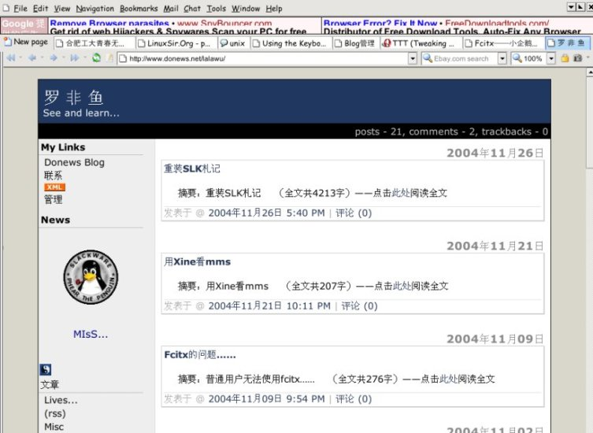
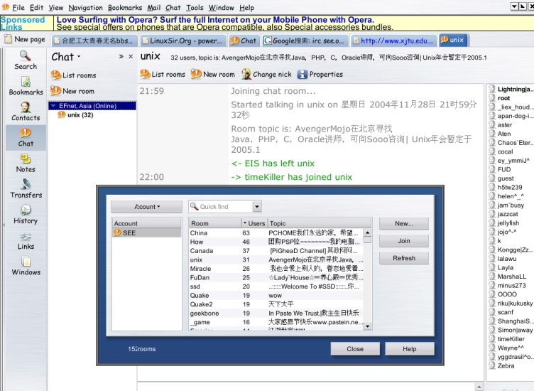

以前对 Opera 的印象就是小巧，速度快，似乎教科书上都是这么说的。其实 Opera 相对于 IE、Mozilla、Netscape、firefox （我没有说错的话，其实后三个是一个系列的~），其最大的特点在于完全的可定制性，其定制性可包括鼠标手势以及右键菜单。
因为朋友的介绍，所以决定试一下。以前在 M$ 下曾经试过一阵子，但是看到那些繁复的配置我就吓怕了。可是到了 Linux 下，Mozilla、Netscape、firefox、Galeon 都不能让我满意，可能也是个人偏爱吧，还有朋友的“教唆”~呵呵。
今天只是试用，却看到了 Opera 很强大，很个性化的一面：漂亮的 skin、功能强大的 full screen 模式、……
Linux 下的安装很简单，下载后解压然后运行 #./install.sh 即可，没什么好说的。其他的自己慢慢设置就会明白了……

下面是内置的irc。

TODO 这个计划曾经想过，想的时候学业还不算紧，至少没有现在紧。而且那时对 Linux 还一知半解，正努力去学着使用，仅仅是为了让它跑起来。但现在，慢慢地发现这个世界太广大了。当自己对这方面兴趣越来越深的时候，学业开始变重了~
很想挤多点时间放在自己爱好的事情上面。比如现在手头上 Fvwm 的配置，也就是桌面的配置，拖了很久了。还有一些软件的使用，比如 LaTex， gnuplot，等等。这些东西慢慢地都用到了。像一个多星期前的课程设计报告，如果懂写 LaTex 的话，就方便了。而前几天物理实验的数据，已经慢慢学着使用 gnuplot 来画数据图……也很想帮助开源社区翻译一些 article，或做点什么。但是自己的英文水平太差了，CET-4 仅仅在准备中而已。Sight...
怎么说学业是不能丢的，摸爬滚打了这么久，好不容易上了大学，以后吃饭还得靠这个呢。所以要挤也只能挤课余时间了。因此也就萌生了 TODO 这个想法。
我的目标不高，并不逼自己在什么什么时间内要掌握什么东西。而只是想利用 TODO 来提高时间的利用率。提醒自己不要灌这么多水了。把所要完成的事情的步骤写下来，如果这几步慢慢完成了，事情也就差不多办完了。还可以在 TODO 里列出一些完成这些事情所需的资料，标明计划的进度……除了计划，还可以在完成的时候写一些经验……
最近家人又来信说要好好学习了，其实我一直在学，只不过差不多一直在那个危险的分数线旁徘徊，现在只能挣扎了……
安装 slk 也有两次了，第二此安装的原因就是因为第一次装的时候分区出了错，而这次为以后长久地使用，让自己的资料更好的保存，减少各种因为系统出错和硬件原因造成的资料的损失。
不过还是很不满意自己断断续续的进度以及事情做了就忘的习惯，觉得还是把这个过程写下来为好。
OK,Let's begin~
因为不了解硬盘安装，所以下载来的镜像都让我刻盘了。那么我就以光驱安装为主，写下我安装的一般过程。这实在是很简单的。
第一步先设置光盘启动，安装的话在出现 boot：提示符时按 Enter 即可。
slk 的是字符界面安装的，并且是以光盘为系统来使用。我第一次安装的时候不了解,在分区和 setup 的时候浪费了一些时间，并且把我原来硬盘上的 fc1 给搞坏了。不过也得感谢 slk，正是因为这些困难，让我学会了很多……
还是言归正传，boot：的时候是 load 默认的内核 bare.i，当然不同的计算机，不同的硬件结构就需要不同的内核来支持，一般象我们这样的计算机，bare.i 足够了。接着以 root 登陆，记得好象不需要什么密码的……
现在进入了 slk 的光盘系统，身份是 root，安装可以开始了。如果没有分区的话，现在也可以分区。
我用的是 cfdisk，因为对 fdisk 不了解，所以不敢用──前车之鉴。用 cfdisk 是很简单的，光标是选择元素。下面的 [boot]、[Delete] 等等就是我们可以选择的操作。其中 boot 标签用来表示启动的盘。先把光标置于要操作的分区前，然后选择 [New] 或其他，不一一多说了，最后记得 [Write]，要不一切努力白费~
对比较严格的系统来说的，分区一般是把 /usr、/tmp、/var 等等单独分区。而我因为个人使用自然不必如此严格。按需要即可，所以，就只单独分出一个 /home，其他的都放在同一个分区下。主要考虑的就是并不是系统的安全问题，而是自己辛辛苦苦搜集来的资料的妥善保存问题。这样可以避免因为系统出问题而格盘造成资料丢失的麻烦。虽然我们现在双系统的居多，这样的问题容易解决。
接着可以安装了，#setup 即可。出现了一些选择的东西。不了解的话可以先看 help。先格式化 swap 分区，接着是 / 分区。选择你要的文件系统。接着开始选择要安装的包。如果是高手，一般是写了 tagfile 来自动安装，我比较菜一点,自己闷头浪费点时间选择吧。上次选的是 full，这次试了一下 export。不过还是不了解依赖关系，所以还是要“full”。export 算是让我了解了一点 slk 的 tgz 包，呵呵~~
接着就比较快了，2~3G的东西，在我的机子上 slk 花了半个多小时，而记得 fc1 的 5G 花了我快一个小时，差别~~~
安装后的第一步我一般是让 X11 系统工作起来。所以得配置一下关于 X11 的方方面面──#xorgconfig。先选择鼠标，我的是罗技的 USB 鼠，先选择 IM\PS2，反正以后还要改。接着是硬盘，我的是罗技套装，硬盘是普通的 105 健，然后随便键入一个名字即可。我是不要三键模拟及键盘自定意的。接着到了比较关键的部分，设置你的显示器及显卡。现在最好拿出你的说明书，一步一步跟着提示走。先设置水平刷新率，接着是垂直的刷新率，然后是显卡的，记得要在 datebase 里选。我的是 nv。接着是分辨率及颜色的选择，比较容易了。
接着 #startx，看看能不能进入 X ，不行再看看出错的 log，会有不错的提示。然后根据 log 的提示思考，修改~
进入了 X 系统？祝贺你，呵呵~~不过现在鼠标还不能用吧，还要修改 X 的配置文件 /etc/X11/xorg.conf，如果是 USB 的滚轮鼠，修改如下字段：
Identifier "Mouse1"
Driver "mouse"
Option "Protocol" "IMPS/2"
Option "Device" "/dev/mouse"
Option "Buttons "5"
Option "ZAxisMapping" "4 5"
然后再启动 X 看看，鼠标是不是很飞了？
中文不是小事情。不过要搞好中文，首先要设置好 locale 在 /etc/profile.d/lang.sh。我一般设为 zh_CN.GB2312，这样 Emacs 才能出中文，其他的如 UTF-8 及 GBK 我就不懂配置了。
配置如下：
export LANG=zh_CN.GB2312
export LC_CTYPE=zh_CN.GB2312
export G_BROKEN_FILENAMES=1
加入以上文字在最后。
这只是中文化的第一步，接下还有。如果要显示中文，首先系统要有中文字体才行。可以把 Win 下的 sim* 字体拷过来，随便放在一个文件夹里。
以下参考了 Linuxsir 上的帖子
包括修改美化 gtk 程序字体。
修改 xorg.conf，加入 Turetype 及自定义的文件夹 FontPath，并去掉 type1 及 freetype 这些 font modules 前的 # 号，使用他们。
修改 /etc/fonts/fonts.conf，加入自定义的字体文件夹路径
<DIR>your font path<DIR>
下载一个 ttmkfdir，进入你自定义的字体目录，然后 ttmkfdir，生成一个 fonts.scale 文件，修改 fonts.scale，把具有 :1:* 开头的行都去掉，接着 #cp fonts.scale fonts.dir，两个文件其实是一样的。还有，接着运行一次 fc-cache，当然让它在开机运行也行，反正我也是这么做的。
如果要让 gtk 程序也能很好地显示，得修改 /etc/gtk/gtkrc.zh_CN，修改 的时候，具体的字体表示格式参照 /usr/X11R6/bin/xfontsel 里显示的来修 改。一般用 simsun，显示得蛮好，我现在就是这么用的。
这也是很重要的一步，光有中文显示（输出）是不行的，还要有输入，不过 这就因人而异了。我安装的中文输入软件是 fcitx，很强大的一个软件，支持 拼音、五笔、二笔等等。安装很简单，也有不少文档，就此略去。接下去要让 fcitx 能够正常工作，还得设置 XMODIFIERS 在 /etc/profie，在最后加上这几行：
export XMODIFIERS="@im=fcitx"
export XIM=fcitx
export XIM_PROGRAM=fcitx
export GTK_IM_MODULES=xim
然后如果是用 Gnome 或 KDE 的，那就在你的窗口管理器里设置启动程序。比如我用的是 Fvwm，只要设置一个启动函数即可。如果是 $startx 启动的，在你的 ~/.xinitrc 最后，启动窗口管理器前加上 fcitx& 就可以启动 fcitx 了。
确保已经运行了上面的步骤。好了，现在你有不少字体使用了，也有了中文输入法。启动 X，慢慢设置吧……
xmms 的中文显示是问得最多的问题。这个我也设置成功了，是在如上的基础上调试成功的。
其实已经设好了如上的东西，xmms 里面就好搞了。首选项->字体，先设好英文字体，再按照 sfontsel 的格式来填写中文字体。OK，已经可以很好地显示了。
至于 Netscape 等等软件，只要你有了中文字体，配置好了 font.conf 和 gtkrc.zh_CN，设置好了 locale 和 xorg.conf，那么中文显示是非常 easy 的事情，那么中文化及美化就此打断，毕竟美化是个人的事情，好不好看每一个人都有标准，现在中文显示出来了，那就是自己的事情了。
前面已经说过了，写本文的目的是不让自己再犯同样的错误，进入同样的“陷阱”，也让自己慢慢了解这个安装的过程。文章所写的基于 x86,slk10,自己感觉是一篇入门安装文章，不涉及一些具体的细节，如果连带原因一起讲，篇幅就很大了。况且，一些设置的原因我也不是很了解，自己英文又不很 pp 的说……
所有资料来自网上的帖子，特别是 www.linuxsir.org/bbs 的置顶贴， 谢谢那些为我们提供帮助的前辈们……
前一段时间如果以普通用户身份启动 fcitx 的话，一打字，程序就会莫名死掉。但用 root 身份却没有这样的问题。直到前几天才弄清楚原因……
原来我是用 root 的身份安装和配置 fcitx 的，配置好 root 下的 fcitx 后，嫌麻烦，我就直接 copy /root/.fctx/ 到了用户目录。人太懒了，就是这样，修改了一下权限就算结束了。
没想到 fcitx 根本没办法使用，后来我无意中想起如果删掉 ~/.fcitx/ 是不是会有帮助呢。一试后，果然行，问题不再。配置好 config 后用得好好~~